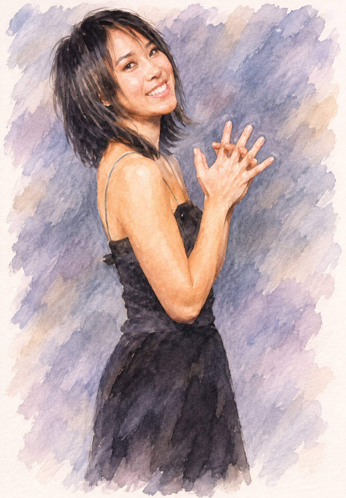
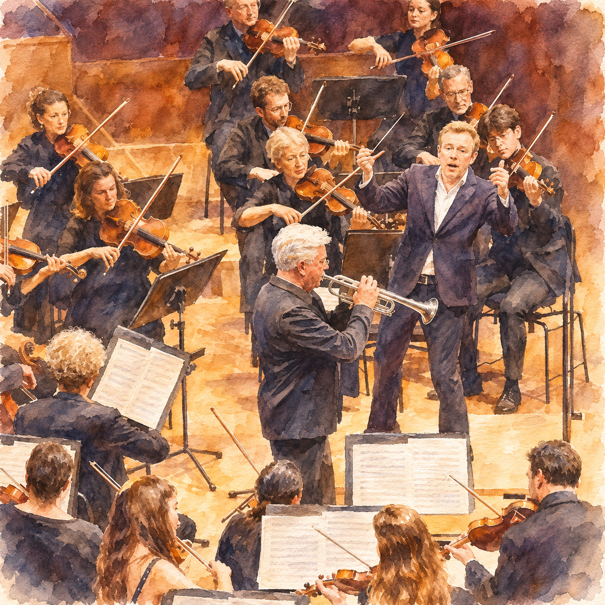
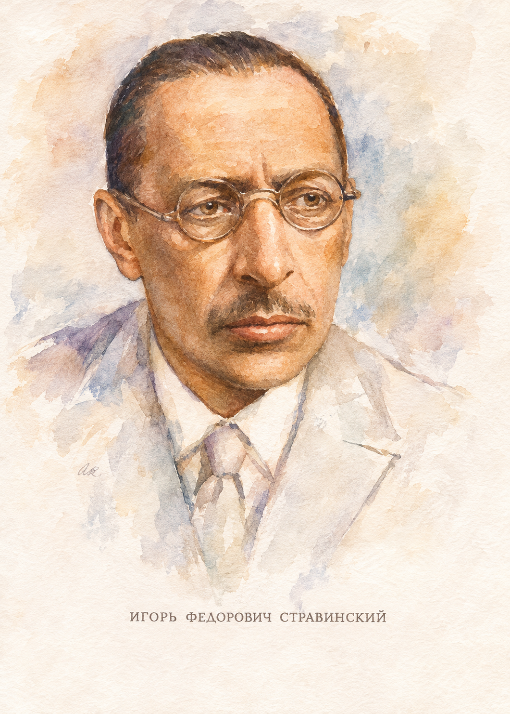
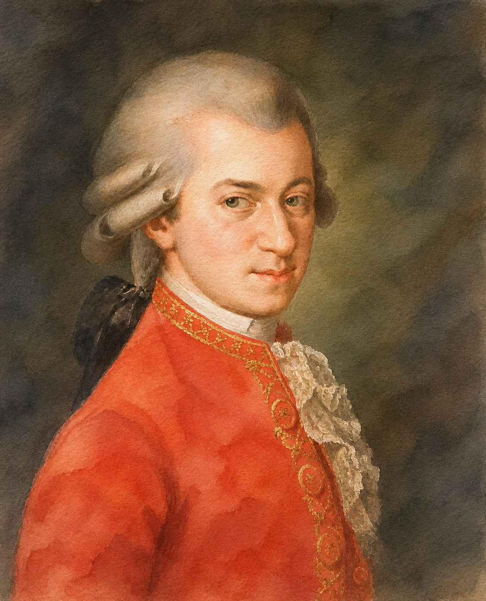
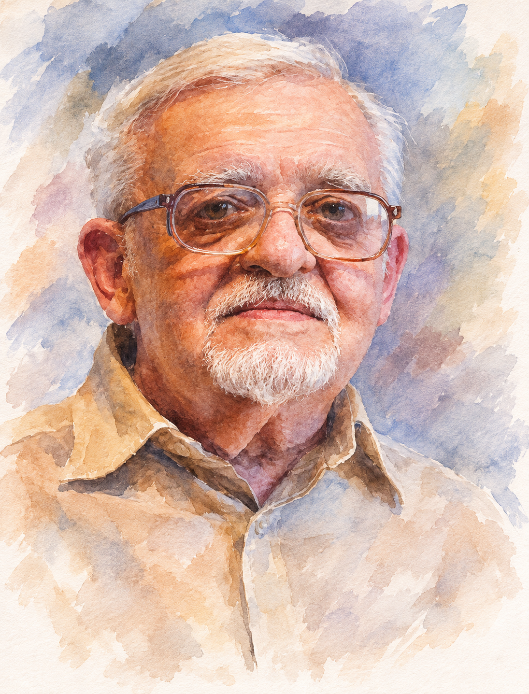
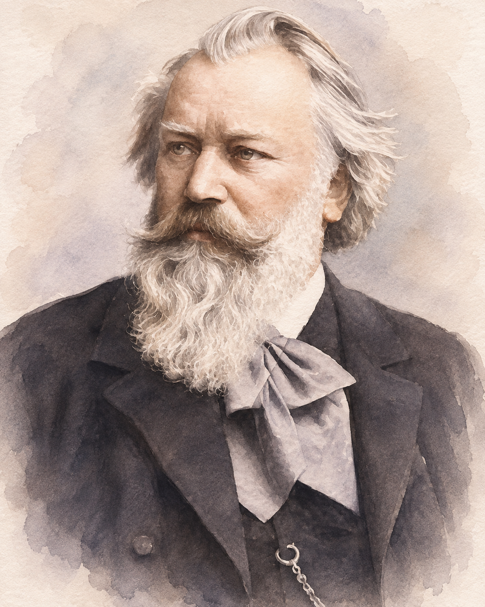
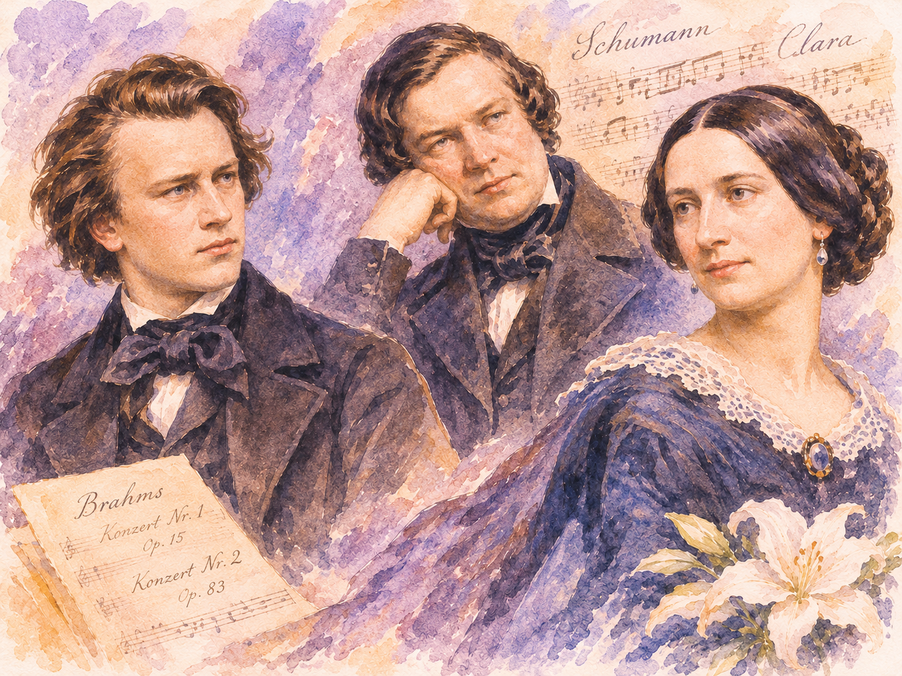

高雄場補充：布拉姆斯兩首鋼琴協奏曲
巡演首站將於 11 月 21 日（六）14:00 在衛武營國家藝術文化中心音樂廳登場。高雄場與臺中場同樣安排布拉姆斯《D 小調第一號鋼琴協奏曲，Op. 15》與《降 B 大調第二號鋼琴協奏曲，Op. 83》；下文的布拉姆斯導聆亦適用於這兩場演出。
CONCERT GUIDE · KAOHSIUNG · TAIPEI & TAICHUNG · 2026
從新古典主義與爵士語法，到布拉姆斯的交響世界
巡演首站將於 11 月 21 日（六）14:00 在衛武營國家藝術文化中心音樂廳登場。高雄場與臺中場同樣安排布拉姆斯《D 小調第一號鋼琴協奏曲，Op. 15》與《降 B 大調第二號鋼琴協奏曲，Op. 83》；下文的布拉姆斯導聆亦適用於這兩場演出。

王羽佳與馬勒室內樂團（Mahler Chamber Orchestra, MCO）在 11 月的臺灣巡演安排兩套截然不同的節目。臺北場以四位作曲家呈現古典形式如何被現代節奏、和聲與配器重新照亮；高雄、臺中兩場則把布拉姆斯兩首鋼琴協奏曲放在同一晚，讓人聽見青年與成熟時期的交響思維。
| 場次 | 公告曲目 | 聆聽問題 |
|---|---|---|
| 高雄 11/21 | 布拉姆斯第一號鋼琴協奏曲，Op. 15；第二號鋼琴協奏曲，Op. 83。 | 鋼琴與樂團是競爭，還是共同構築一部交響曲？ |
| 臺北 11/22 | 開場：普羅高菲夫第一號《古典》交響曲（現場確認）；史特拉汶斯基《鄧巴頓橡樹園》、莫札特第二十九號交響曲、卡普斯汀第四號鋼琴協奏曲的實際次序待核對。 | 既有的形式，如何因節奏、配器與和聲而得到新生命？ |
| 臺中 11/24 | 布拉姆斯第一號鋼琴協奏曲，Op. 15；第二號鋼琴協奏曲，Op. 83。 | 鋼琴與樂團是競爭，還是共同構築一部交響曲？ |
臺北場早期宣傳資料曾列崔法斯曼《爵士組曲》；本文依馬勒室內樂團現行節目頁所列的《鄧巴頓橡樹園》整理。臺北場開場曲與安可曲序依現場資訊補充，其餘正式曲序仍待節目單核對。高雄場官方節目 ↗ 臺北場官方節目 ↗ 臺中場官方節目 ↗
王羽佳出生於北京，後於費城柯蒂斯音樂學院師從 Gary Graffman。她的演奏常以敏捷節奏、清晰觸鍵與鮮明音色對比受到注意。本次「piano and direction」指的是她擔任鋼琴獨奏，並從鍵盤以前奏、呼吸、姿態和眼神引領合奏；不是全程站在指揮台上使用指揮棒。

1997 年成立的 MCO 與阿巴多的藝術理念有深厚淵源，重視聲部之間的傾聽與共同決策。王羽佳在 2023 年成為其藝術夥伴，這次巡演的首席與樂團引領者為 Matthew Truscott。可留意鋼琴加入後，樂句的速度轉折、句尾與下一個段落如何在各聲部之間傳遞。
莫札特呈現十八世紀的交響曲語法；史特拉汶斯基以巴洛克協奏曲和對位為出發點；普羅高菲夫將海頓式古典精神加上二十世紀的意外；卡普斯汀則將爵士節奏和和聲寫進嚴格記譜的協奏曲。11 月 22 日臺北場由普羅高菲夫《第一號〈古典〉交響曲》開場，此點已由現場聽眾確認；其餘三首正式曲目的實際次序，待核對當日節目單後補入。以下各節的排列仍依導聆脈絡，不代表其餘作品的現場曲序。

1937–38 年創作；降 E 大調協奏曲。作品源於華盛頓特區鄧巴頓橡樹園的委託，參照巴赫《布蘭登堡協奏曲》式的多聲部互動，卻以二十世紀的重音與和聲重新組織。它沒有鋼琴獨奏者；主角位置不斷在樂團聲部間流動。
短小音型迅速交錯，精密對位常伴隨難以預測的重音。試著追蹤同一動機在不同樂器間的接力。
較為克制、清澈的中段，不是浪漫派濃厚的慢板。長笛與其他聲部的出入，以及樂團是否降低音響密度來讓旋律浮現，都是很好的入口。
音樂重新前進，短小節奏素材不斷重組，展現嚴謹而機智的幽默。

1774 年創作。十八歲的莫札特以相對節制的編制做出層次豐富的交響曲。與龐大浪漫派音響相比，這首作品的趣味在於線條、比例和句法的細節。
1916–17 年創作。普羅高菲夫以海頓式交響曲為起點，採四樂章形式與精巧配器，卻在和聲、轉調與重音中加入現代的銳利感。古典形式沒有被複製，而是被他帶著幽默感重新想像。

1989 年創作。卡普斯汀兼具古典作曲訓練與爵士鋼琴語言。他的作品聽來像自由即興，複雜節奏、和弦和鋼琴音型卻多完整寫下。欣賞時不必急著辨認每一個和弦，先抓住律動與鋼琴、樂團間的機敏對答。
王羽佳：第四號鋼琴協奏曲｜2025 蒙彼利埃法國廣播音樂節 ↗ Ludmil Angelov：管弦樂版本 ↗ Frank Dupree：完整作品 ↗ Schott 作品資料 ↗
以下曲名與順序依 2026 年 11 月 22 日臺北場現場公告整理；前三首為王羽佳鋼琴獨奏，末曲由馬勒室內樂團演出。阿貝爾曲目為第二樂章一事，則由現場聽眾補充確認。影音均為延伸聆聽，非臺北場實況；連結下方標出可確認的演出／發行日期與來源。
Nikolai Kapustin — Prelude in C-sharp minor, Op. 53 No. 10
鋼琴獨奏：王羽佳。
這首是《24 首爵士前奏曲》Op. 53 的第十首。短促的切分節奏像不斷向前推進的鼓點，右手的尖銳線條和左手的低音脈搏彼此咬合；可留意她如何在快速重音間維持清楚的拍感，而不把爵士式的彈性彈成含混的自由速度。
王羽佳：Op. 53 No. 10 ↗ 維也納 Wiener Konzerthaus 演出（2022-04-26 錄影）；Deutsche Grammophon／YouTube，2024-04-18 發布。
Nikolai Kapustin — Prelude in B major, Op. 53 No. 11
鋼琴獨奏：王羽佳。
同屬《24 首爵士前奏曲》Op. 53，第十一首的性格則較為舒展、歌唱。旋律常在流動和弦上浮現，句尾以帶藍調色彩的和聲稍作停留；可聽右手旋律如何像即興般延展，而左手仍以細緻的律動讓音樂不失方向。
王羽佳：Op. 53 No. 11 ↗ 維也納 Wiener Konzerthaus 演出（2022-04-26 錄影）；Deutsche Grammophon／YouTube，2024-05-02 發布。
Johannes Brahms / György Cziffra — Hungarian Dance No. 5
鋼琴獨奏：王羽佳。本曲為齊夫拉（György Cziffra）鋼琴獨奏改編版。
布拉姆斯的舞曲旋律以忽快忽慢的舞步與鮮明重拍著稱；齊夫拉的改編則把它擴展成高難度的鋼琴炫技：八度、飛躍與裝飾音讓旋律不只被「演奏」，還像在鍵盤上即席翻騰。聽那個熟悉主題每次回來時，速度拉扯與強弱突轉如何製造舞蹈般的彈性。
György Cziffra：齊夫拉改編版 ↗ 齊夫拉鋼琴演奏；Hungaroton 錄音，1995-09-30 發行，YouTube 官方音源 2016-02-15 上架。
Carl Friedrich Abel — Symphony in A major, Op. 10 No. 6, II: Andante un poco Adagio
馬勒室內樂團演出。第二樂章由現場聽眾確認補充。
阿貝爾（1723–1787）是德國早期古典時期作曲家、著名維奧爾琴演奏家，後定居倫敦，並與 J. C. Bach 共同經營 Bach–Abel 音樂會。此一 Andante un poco Adagio 以從容的步伐讓弦樂層層相接，旋律不靠巨大的戲劇轉折，而靠呼吸般的句尾、柔和的和聲與木管色彩慢慢推移；可留意低音的穩定行進如何襯托上方旋律的輕盈起伏。
La Stagione Frankfurt／Michael Schneider：第二樂章起點 04:22 ↗ 完整交響曲錄音；YouTube 來源，2025-10-05 上架。

高雄與臺中兩場都把兩首完整協奏曲放在同一晚：第一號通常約五十分鐘，第二號約四十八至五十分鐘，加上中場休息，這不是兩段輪流展示的鋼琴獨奏，而是一段接近兩小時的長距離合作。第一號的 D 小調衝突、第二號的降 B 大調廣闊，要求演奏者在體力之外維持觸鍵重量、聲部層次與長篇結構的方向感。
對王羽佳與馬勒室內樂團而言，「piano and direction」尤其把難題放大：鋼琴不能只在自己的段落漂亮地完成，而要在進入、停頓、加速與收束時，讓整個樂團聽得見下一步。第一號常像樂團先提出問題、鋼琴再接手辯論；第二號則更常把鋼琴編進管弦樂的肌理。可以留意首席、管樂首席和鋼琴之間如何交換起音與呼吸。
| 第一號，Op. 15 | 第二號，Op. 83 | |
|---|---|---|
| 完成／首演 | 1858／1859 | 1881／1881 |
| 樂章 | 三個 | 四個 |
| 聽覺重心 | 從 D 小調的交響性衝突，尋找鋼琴如何承接樂團。 | 從法國號、大提琴與鋼琴的對話，聽見大型作品中的室內樂細節。 |
1854–58 年創作。1853 年，二十歲的布拉姆斯經約阿希姆引介認識羅伯特與克拉拉・舒曼；羅伯特隨後在〈新路徑〉一文中公開推舉這位年輕作曲家。隔年羅伯特病危、入住恩德尼希療養院，布拉姆斯與克拉拉在極困難的處境中通信、互相支持，也共同關切舒曼一家。

協奏曲走過很長的轉化：最初的素材曾被設想為雙鋼琴奏鳴曲，繼而轉向交響曲，最後才找到鋼琴與管弦樂團共存的形式。因此它的鋼琴不是在管弦樂之上加一層華彩，而是保留了交響曲的重量。1859 年 1 月布拉姆斯在漢諾威親自擔任獨奏、由約阿希姆指揮首演；早期反應並不一致，尤其萊比錫演出遭遇冷淡。今天聽來的緊張與不妥協，正是這首作品最有辨識度的地方。
開頭的 D 小調不是鋼琴的宣言，而是管弦樂團以低音、定音鼓與弦樂推進的劇烈下行與衝突。可從00:39聽樂團如何鋪出沉重脈搏；此處先不要急著等「主題」，而要記住重音與和聲壓力如何一層層累積。
到04:26（筆記約 m.91 [B]，鋼琴進入），鋼琴不是把樂團趕開，而是以分解和弦與急促的音型接住既有張力。接著在07:20（Poco più moderato）與08:34，比較速度稍放寬後，鋼琴如何把原來的衝突改寫成更有歌唱性的線條；這種 push and pull，往往比單純加快更考驗鋼琴和樂團是否同步。
發展部不是一條直線的炫技段落。11:31（Tempo I）、13:29與14:38可聽見動機被拆開、換到不同音域與配器；鋼琴有時領頭，有時只是替弦樂或木管補上陰影。當17:39（Poco più moderato）再度鬆動，再到18:54及21:31（Tempo I, Un poco più animato），重點是聽長篇再現如何回到開頭的能量，而非把它當作同一句話的重播。
23:13開始，D 小調的壓力暫時退後，弦樂展開安靜而緩慢的長句。關於此樂章常被聯想到克拉拉或布拉姆斯當時的私密情感；信件與年代確實讓這種聯想可以理解，但並沒有充分史料讓我們把它指定為一封音樂情書。較可靠的聽法，是先聽其音樂如何以克制的和聲與延宕維持 tenderness。
在24:40（筆記約 m.14，molto dolce espr.，鋼琴進入），鋼琴以近乎室內樂的方式接近弦樂，而不是覆蓋它。到28:23，旋律線和伴奏的位置逐漸交換；31:12（筆記約 m.71，molto espr. dolce）則可留意鋼琴音色如何由和聲支撐轉為發言者。這些小節號與排練標記依聆聽筆記標示，未在此逐一據總譜核校。
36:15進入終曲。輪旋的趣味不在於一個主題原封不動回來，而在於每次回返都被鋼琴音型、管弦樂重音與對位式交錯改變。留意鋼琴的跳躍、弦樂的推進，以及主題何時被壓縮成更短的手勢；前兩樂章的沉重在這裡轉為會前進的能量。
1878–81 年創作。距第一號二十餘年，布拉姆斯不再試圖把協奏曲寫成與樂團對抗的戲劇，而是把鋼琴放進一個可伸縮的大型結構。四樂章的安排在獨奏協奏曲中少見：第一樂章尚未結束，第二樂章又以帶詼諧曲力度的 Allegro appassionato 延長張力；第三樂章才讓時間真正放慢，第四樂章則不以勝利式的轟鳴收場。
00:05（王羽佳／葛濟夫），法國號先在寬闊的音域唱出開頭，鋼琴隨即不是反駁，而是以柔和的和弦回應。這個開場定下整首作品的關係：鋼琴既能帶動，也必須讓出空間給管樂的句子。若轉聽00:27（齊瑪曼／伯恩斯坦），可比較兩種速度與音色如何改變「回應」的份量。
主部逐漸擴展時，鋼琴的八度、分解和弦與厚重和聲常像把樂團音響由內部撐開，而不是附著在表面。聽它在強奏後如何突然退到伴奏位置，也聽木管和弦樂如何接住未說完的旋律；這種不斷換位，讓第一樂章有交響曲般的遠景。
18:04（王羽佳／葛濟夫）進入第二樂章。它帶有詼諧曲的急促步伐與重拍，卻不只是輕快插曲：低弦與定音鼓推動的節奏，讓鋼琴的迴旋、跳進與和弦帶著近乎 Sturm und Drang 的張力。19:11（齊瑪曼／伯恩斯坦）可作為另一種比例的比較。
此處尤其可聽 hemiola 與切分節奏帶來的重心位移：拍點沒有消失，卻彷彿被往前或往後拉。若王羽佳所談的 push and pull 是一種聆聽線索，這個樂章正適合觀察鋼琴能否保持節奏銳利，同時讓樂團仍有彈性地咬住重拍。
27:40（王羽佳／葛濟夫）開始，先聽大提琴的長旋律。鋼琴不是搶著成為主角，而是在它之後進入，以較細的音型、和聲與回聲式短句接續。28:39（齊瑪曼／伯恩斯坦）也可聽見這個入口。
這一樂章的難處在於把大廳尺度縮小：大提琴、鋼琴、木管和弦樂要像 chamber-like intimacy 般彼此讓位，但底下仍有整個交響編制的支撐。聆聽時不妨追蹤：每當鋼琴開始裝飾旋律，誰保留旋律主線？誰在低聲部把和聲向前帶？
40:02（王羽佳／葛濟夫）的終曲回到較輕的步伐；舞曲感來自短句、重音與微妙的切分，而不是直線式衝刺。43:06（齊瑪曼／伯恩斯坦）可比較它如何在幽默與優雅之間取得平衡。
布拉姆斯把最終的能量分散在鋼琴、木管與弦樂之間，並不把終止做成巨大的紀念碑。這正是作品的 symphonic grandeur 與機敏同時存在之處：聽到最後，仍可留意鋼琴是否在帶領，或只是眾多聲部之一。
臺北場的主線是風格與形式：莫札特、史特拉汶斯基和普羅高菲夫分別從不同時代回應古典傳統，卡普斯汀則把爵士語言納入協奏曲。高雄、臺中場的主線則是鋼琴與樂團的關係：第一號的情緒與交響張力，到了第二號化為更寬廣的架構與豐富的聲部合作。
不妨把兩套節目連在一起聽。臺北特別留意節奏機巧、樂器交棒和語言轉換；高雄、臺中則聽長篇樂章如何發展、鋼琴與樂團如何交換角色，以及布拉姆斯如何在龐大形式中保有像人聲般的呼吸。
本文依使用者提供的《2026 王羽佳與馬勒室內樂團：臺北及臺中音樂會導聆》整理。正文影音為延伸聆聽，並非 2026 年巡演實況；不同版本的時間點不可互用。臺北場安可曲名與順序依現場公告整理，阿貝爾第二樂章由現場聽眾補充；各影音的演出／發行日期與來源已標於曲目連結旁。文中小節號與排練標記依既有聆聽筆記保留，未逐一以總譜核校；關於王羽佳所提出的聆聽詞彙，本文僅作為分析線索，未將其改寫為直接引言。